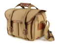

器材库 > 摄影包 > 5系列 335

详细规格
产品类型
单肩挎包
发布日期
2000
厂家推荐价格
2,470.00 （人民币）
容量
2机3镜
外部尺寸
W37 x D22 x H26.5cm
内部尺寸
W35.5 x D15 x H22cm
颜色
卡其色
材质
帆布 皮革
重量
1900g
防雨罩
无
IUJIPKCL2014-06-28 22:134 分
操作性 4.00功能性 3.50美观性 5.00趣味性 4.50耐用性 5.00性价比 2.00
huoyan2014-06-24 15:044.58 分
操作性 4.50功能性 4.50美观性 5.00趣味性 4.50耐用性 4.50性价比 4.50
小月亮2014-06-23 10:564.25 分
操作性 4.00功能性 4.00美观性 4.50趣味性 4.50耐用性 4.50性价比 4.00
鸿凯2014-06-23 10:544.17 分
操作性 4.00功能性 4.00美观性 5.00趣味性 4.00耐用性 4.00性价比 4.00
产品图 / 样片
1
评测 / 相关文章
该产品暂无存档的评测文章